Primer etapa crear una instancia en aws
Se realiza el login con el Account ID proporcionado por el catedratico
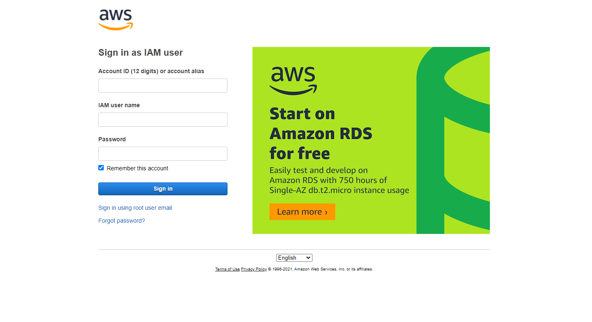Darle click al ec2
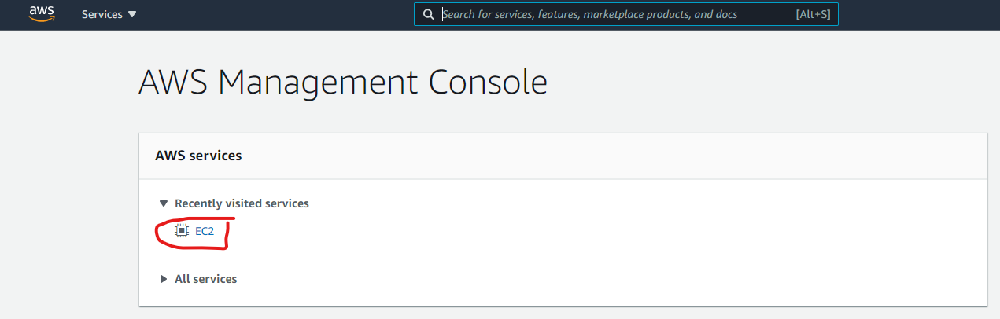Asegurarse cambiar la region
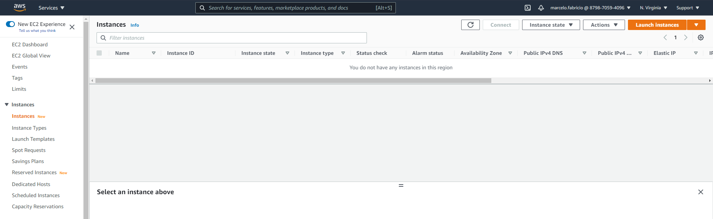Darle click us-east-1
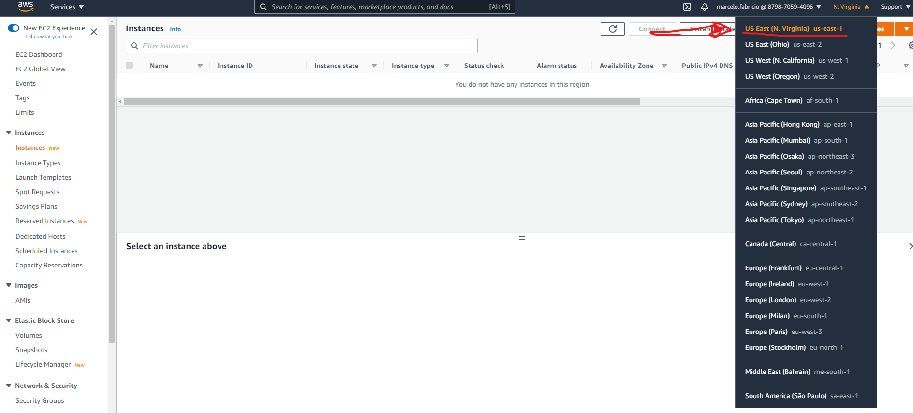Despues asegurarse darle click donde dice Instances
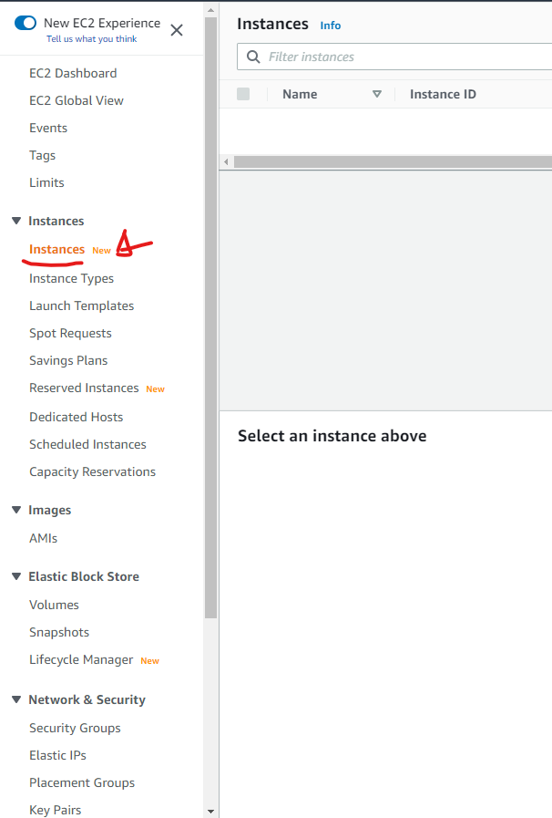Le damos click a boton naranja que dice Launch instances
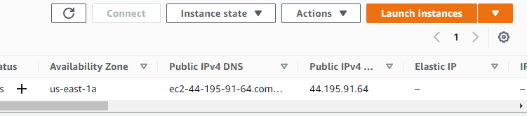Nos va a dar a la pantalla de de CHOOSE AMI, tenemos que observar que diga Amazon Linux 2 AMI (HVM), SSD Volume Type,
tenemos que asegurarnos que este en 64-bit(x86) y le damos click en select
Estamos ahora en la pantalla Choose an Instance Type tenemos que darle click donde dice t2 micro Free tier elegible,
proseguimos a darle click a Next: Configure Instance Details
Ahora en el Configure instance details nos vamos a Subnet y le damos click a us-east-1a
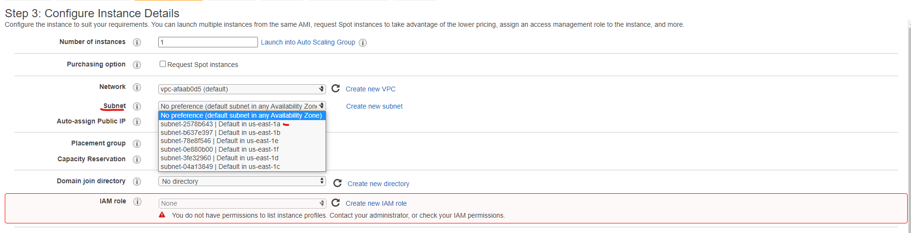En auto assign public Ip le damos click en enable y nos vamos a darle click a next en el boton de la esquina inferior derecha
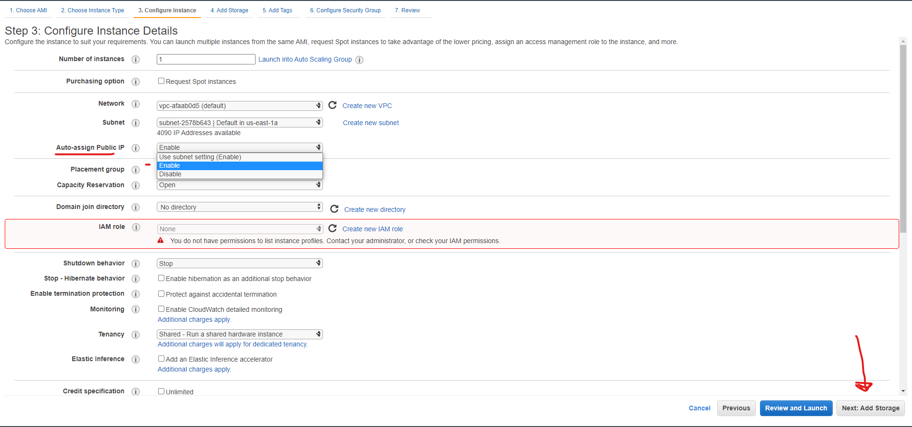En el add storage nos aseguramos que este en 8gb de almacenamiento y solo le damos click next add tags
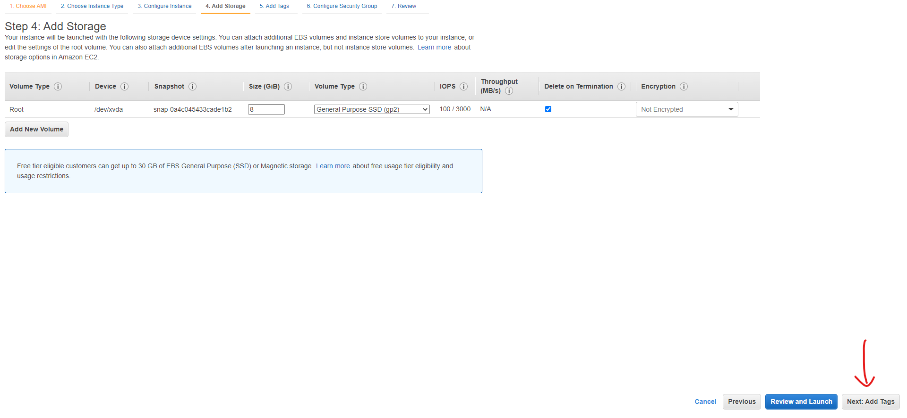en Add Tags le damos click al boton que dice add tag
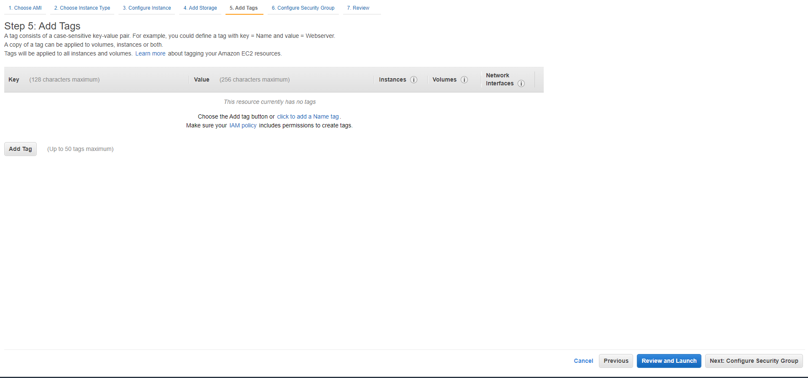Despues le en el key escribimos la palabra Name, en el Value escribimos nuestro nombre y proseguimos a darle click a Next
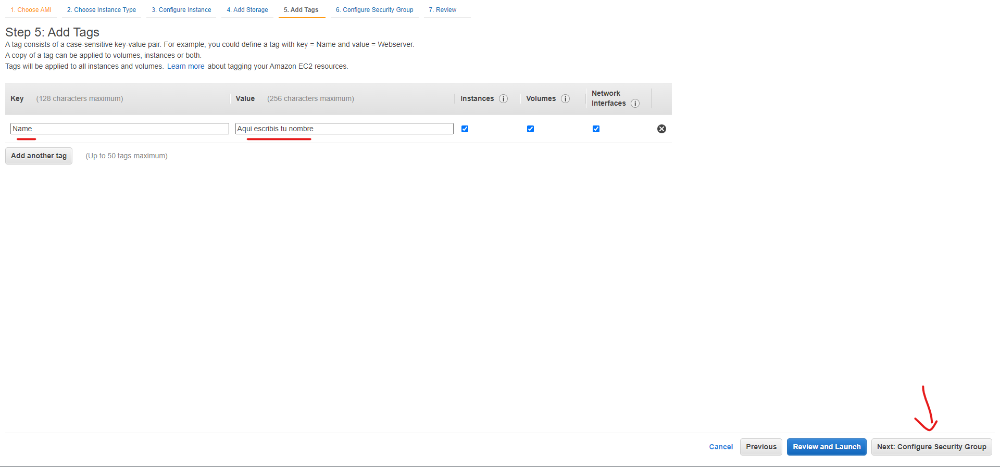Estamos en la pantalla de configure security group. Donde dice security group name despues de launch-wizard-2 le agregamos
un guion seguido por un nombre-nombre y finalizamos dando en Review and Launch
En el Step 7 revisamos que todo este en orden y solo damos click en Launch
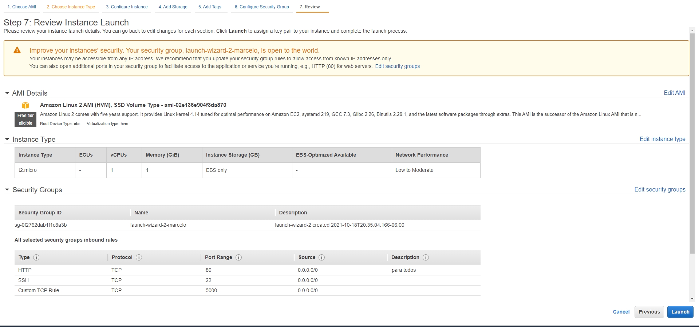Nos va salir una pantalla emergente con que nos pide se le agregamos una llave(key), escogemos la opcion que dice, "Proceed without a key pair
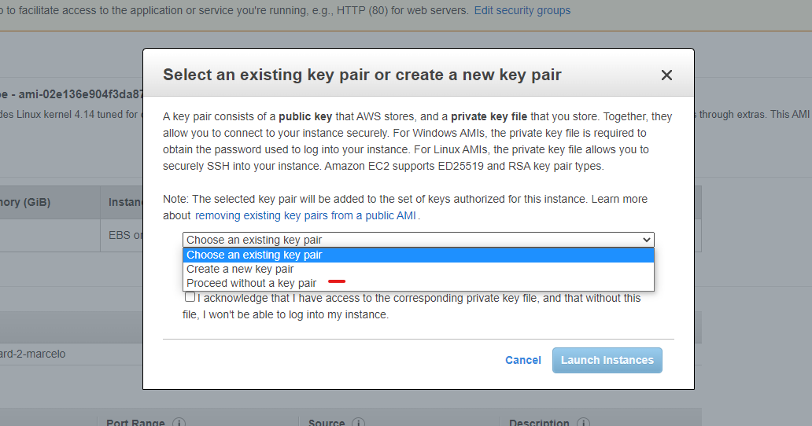Le damos click a la casilla vacia y despues Launch
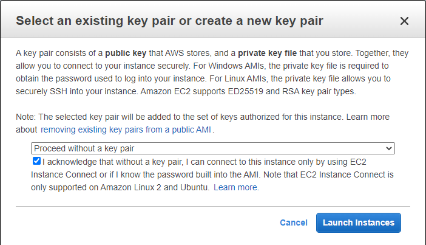Hay dos maneras de ir a la instancia dandole click al i-con los numeros o le damos click en view instances
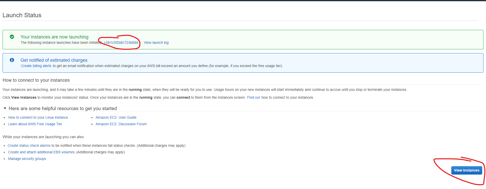Ya devuelto a las instancias le damos click a nuestra instancia y podemos darle connect de dos maneras en actions o simplemente en el boton connect
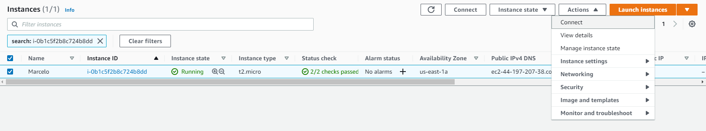Nos aseguramos que este en ec2 instance connect y solo le damos click en connect
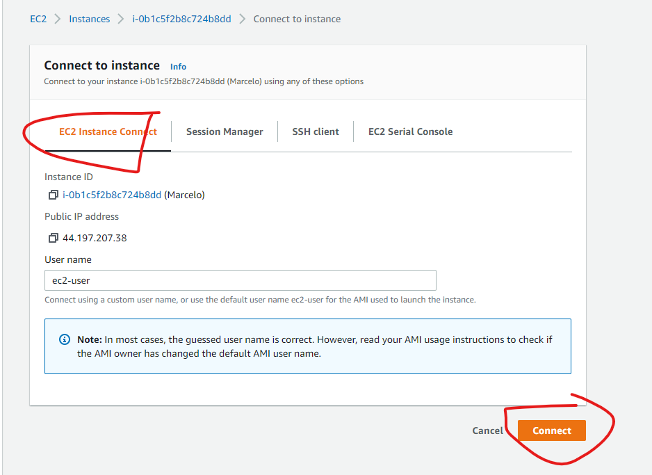Segunda etapa maquina virtual e instalacion de servicios
Primero tenemos que actualizar el centOS entonces escribimos: $ sudo yum update
Nos pide que si queremos descargar tanta cantidad y escribimos y
Ojo no copiamos el simbolo: $ dolar solo es de referencia a cual es el codigo
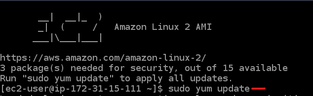 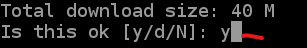instalacion del node
ingresamos cada uno de estos codigos para hacer uso de la instalacion
$ curl -o- https://raw.githubusercontent.com/nvm-sh/nvm/v0.34.0/install.sh | bash
$ . ~/.nvm/nvm.sh
$ nvm install node
$ node -e "console.log('Running Node.js ' + process.version)"
el ultimo codigo nos dice la version que estamos corriendo del node
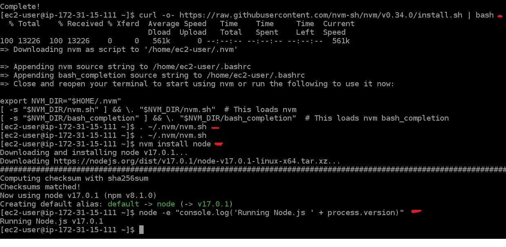Instalacion del Git y uso de archivos
Primero instalamos el git con este codigo:
$ sudo yum install git
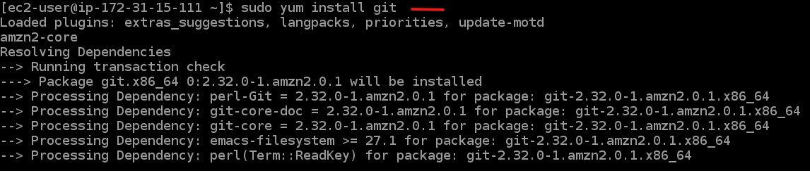Ahora se prosigue a incorporar las carpetas de codigo de las url en la pagina de Git.
le damos click a al boton verde que dice code y copiamos la url que esta alli.
Nos vamos a la maquina virtual y escribimos $ git clone presionamos la tecla space(espacio) y pegamos la url
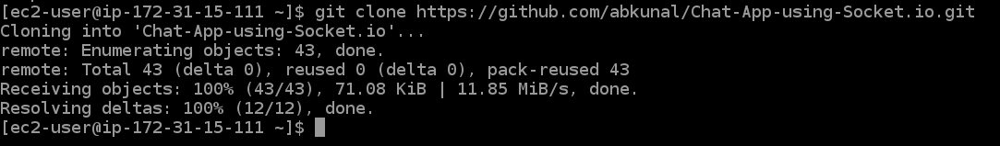Escribimos el comando $ ls y nos van aparecer en letras moradas el nombre del archivo
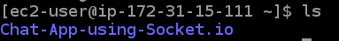Usamos el comando $ cd mas el nombre de la carpeta que esta en las letras moradas para ir a la carpeta de destino
notamos que ahora hay un cambio donde escribimos el codigo
Hacemos un $ npm install
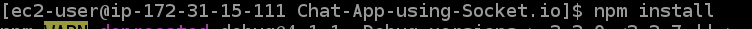Ingresamos el codigo $ npm install -g pm2 esto es para instalar el pm2 que permite que no se cierre el host aunque nos salgamos del sitio

ahora iniciamos el js de la carpeta git con este codigo $ pm2 start app.js
ojo app.js solo es el nombre del js para correr nuestro archivo el nombre puede ser cualquiera
Hacemos el curl localhost:5000 para ver nuestro proyecto localmente
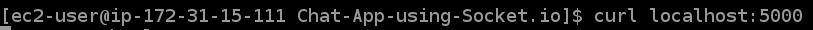Cambios en el protocolo de seguridad y usar una ip publica
Entramos a la pantalla de instancia y entramos a nuestra instancia, nos vamos a security y le damos click al link que esta en security groups
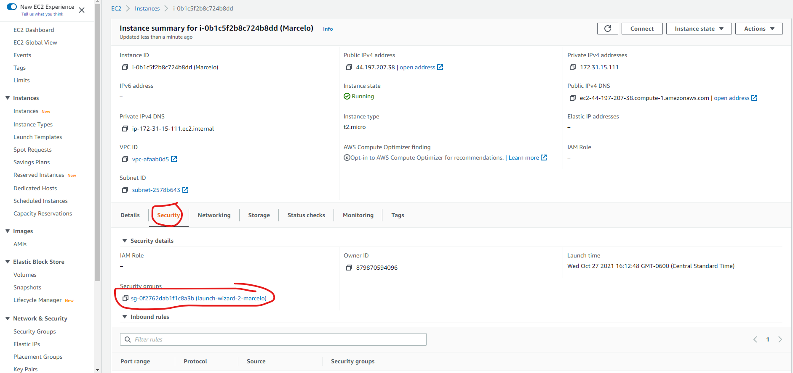Despues buscamos edit bounds y le damos click
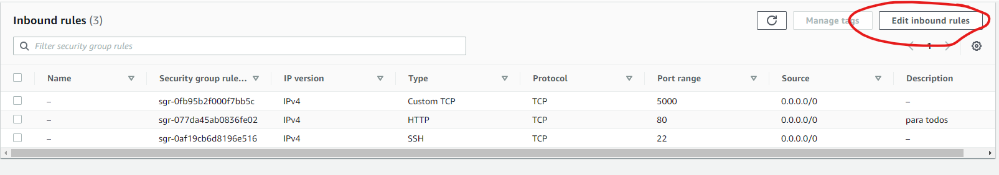Primero le damos en add rule aparece una nueva linea y aqui podemos ingresar el puerto 5000
y en source le damos a la opcion anywhere ipv4

Tambien para que ya no estemos ingresando en el link 5000, vamos agregar una nueva regla en este le vamos a poner puerto 80 y siempre en anywhere ipv4
y le damos save rules
Ahora nos vamos a nuestra instancia y buscamos nuestra ip publica y ahora nos tiene que dar el archivo que subimos